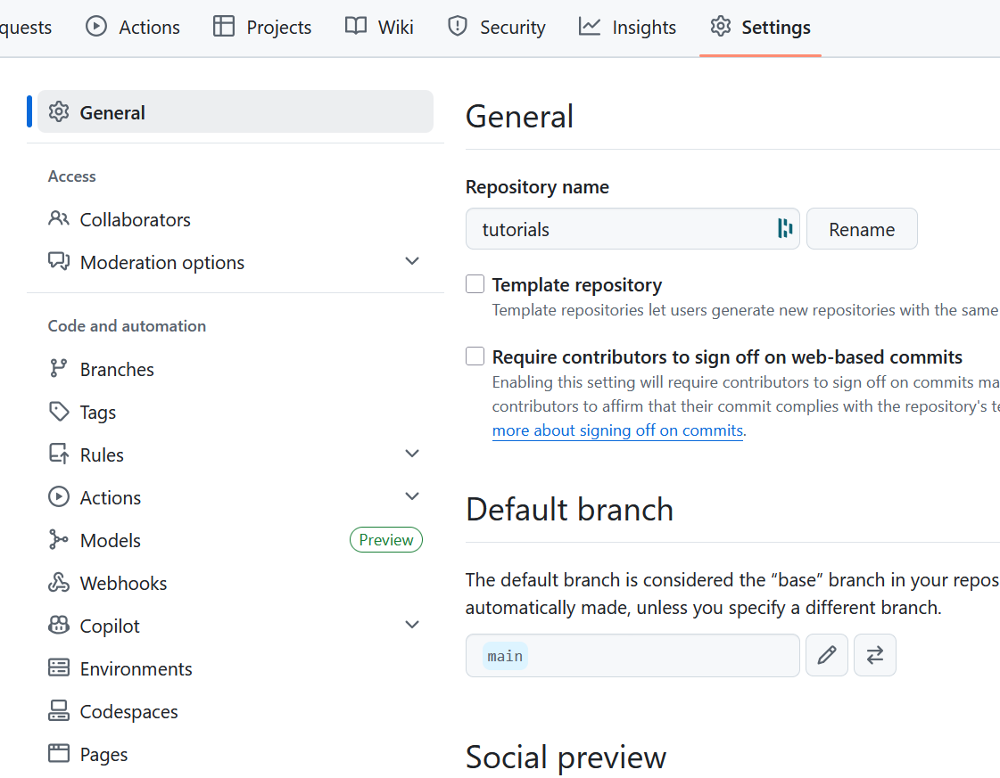
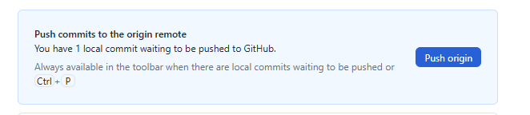

Tuto rapide pour publier son "tuto"
📋 Vue d'ensemble
Ce tutoriel vous guide pour publier vos rapports de jeu sur GitHub Pages en 4 étapes principales :
- Préparer vos fichiers Markdown
- Créer votre fork GitHub
- Ajouter vos fichiers
- Contribuer au projet principal
ÉTAPE 1 : Préparer les fichiers Markdown
1.1 Créer vos fichiers .md
- Préparez vos fichiers au format
.md (Markdown)
- Consultez les tutoriels en ligne ou utilisez des convertisseurs
- Nommage : Utilisez des noms sans espaces (utilisez
- ou _)
- Images : Évitez les extensions en majuscules
1.2 Ajouter l'en-tête obligatoire
⚠️ IMPORTANT : Insérez ce bloc au début de chaque fichier :
---
title: "Your_Race: Runde 1"
date: 2023-10-15
---
- La date détermine l'ordre d'affichage sur votre page
- J'ai mis la date de génération du tour. (donc su cr ou nr)
- Pour intro/conclusion : ajustez la date pour le bon positionnement
1.3 Règles de formatage
- Retour à la ligne : finir par
space+space+return
- Titres : utiliser
#, ##, ###
- Images : format

Ressources utiles :
ÉTAPE 2 : Créer votre fork GitHub
2.1 Créer un compte GitHub
Si ce n'est pas déjà fait : https://github.com
2.2 Forker le repository
- Aller sur : https://github.com/eressea/tutorials
- Cliquer sur : bouton "Fork" (en haut à droite)
- Sélectionner : votre compte personnel
- Attendre : la création du fork
2.3 Configurer votre fork
Configuration Generale

** Activer GitHub Pages**

💡 Note : Pour synchroniser plus tard → bouton "Sync fork"
⚠️ Ne touchez pas à la brache gh-pages Elle sert à publier vos pages.
ÉTAPE 3 : Ajouter vos fichiers
3.1 Installer GitHub Desktop
Télécharger : https://desktop.github.com/download/
3.2 Premier lancement
- Authentification : via votre navigateur
- Cloner : sélectionner votre repository
- Cliquer : "Clone votre_compte/tutorials"
- Dossier par défaut :
C:\Users\<YourUserName>\Documents\GitHub\tutorials
3.3 Organiser vos fichiers
- Créer : un dossier
your_race à côté du dossier goblins
- Ajouter : vos fichiers
.md dans ce dossier
3.4 Workflow Git
Voir les modifications

Commit (sauvegarder)
- Sélectionner : les fichiers à commiter
- Écrire : description courte des changements
- Cliquer : "Commit * files to main"
Push (envoyer)

Cliquer : "Push origin" pour envoyer vers GitHub
ÉTAPE 4 : Contribuer au projet
4.1 Vérifier votre travail
✅ Tester vos pages
- Aller sur : votre site (lien dans Settings → GitHub Pages)
- Vérifier : l'affichage des pages
- Si problème : sur votre PC : modifier → commit → push
- ⏱️ Patience : la mise à jour peut prendre du temps
✅ Synchroniser votre fork
- Vérifier : si votre fork est à jour
- Si nécessaire : utiliser "Sync fork"
4.2 Créer une Pull Request
Quand tout est prêt :

- Aller dans : "Pull Request"
- Cliquer : "New Pull Request"
- Réviser : tout ce qui sera proposé
- Commenter : expliquer vos changements
- Valider : envoyer la demande
🎉 Résultat
Votre contribution est maintenant entre les mains d'Enno pour validation !
🚀 Résumé des étapes
| Étape |
Action |
Outil |
| 1 |
Préparer fichiers .md |
Éditeur texte |
| 2 |
Fork + config |
GitHub web |
| 3 |
Ajouter fichiers |
GitHub Desktop |
| 4 |
Pull Request |
GitHub web |
📞 Besoin d'aide ?
- Sur Discord : https://discord.com/channels/509396702663278592/1404841577402077332
- Documentation GitHub pour les détails Git